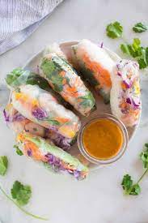

Spring Rolls!

Meat in veggies wrapped in rice paper!
Enjoy this vietnamese dish!
Ingredients
For the roll:
- Rice paper (dried)
- Fresh Thai Basil
- Fresh Mint Leaves
- Lettuce
- Cooked meat of your choice (chicken, pork, beef, shrimp)
- Any additonal veggies you prefer
For the sauce:
- 2 Tbsp Sugar
- 1/4 cup of Water
- 4 Tspn Fish Sauce
- 3 Tbsp Hoison sauce
- 1 Fresh Limes
- 1 Tbsp Garlic Chili Sauce (optional - for heat)
- 1 Tbsp Peanut Butter
Steps
- First make the sauce by mixing all ingridents together. Adjust hoison/peanut butter and water for a silky smooth sauce
- In a large bowl of warm water, dip one wrapper in for a few seconds to soak the dry rice paper
- Lay rice paper on flat surface
- First place lettuce in the center, then add meats, then any additional veggies you prefer, top with cilantro/mint/basil
- Carefully roll the spring roll by rolling inwards from the bottom of the spring roll, and tightly packing it as you roll up
- Seal the ends and you should be done!